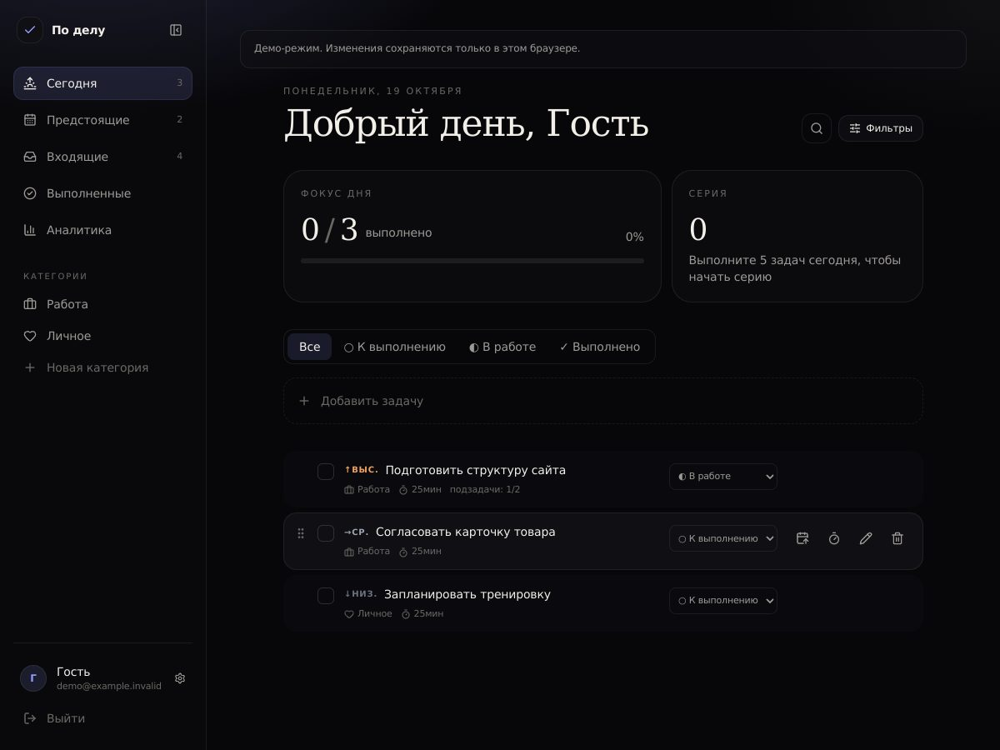
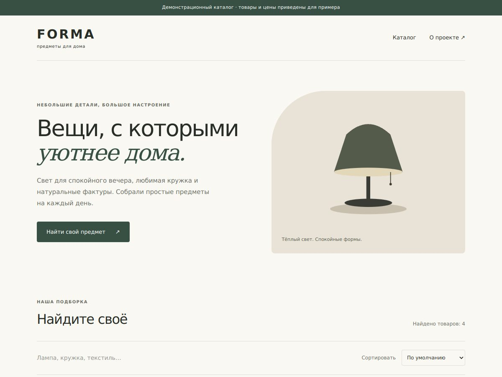
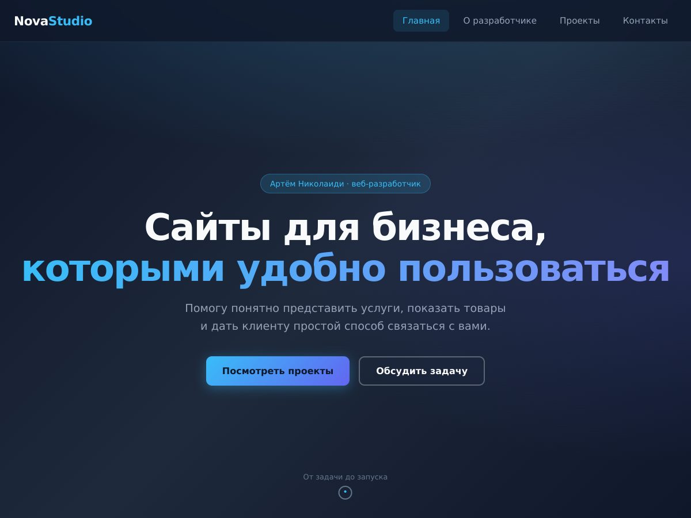

Веб-приложение
По делу
Трекер задач с авторизацией, календарём, приоритетами и серверным хранением данных.
React · TypeScript · NestJS · PostgreSQL
Посмотреть код проекта По делуПримеры интерфейсов и программной логики. Это учебные и самостоятельные проекты; они не выдаются за выполненные клиентские заказы.

Веб-приложение
Трекер задач с авторизацией, календарём, приоритетами и серверным хранением данных.
React · TypeScript · NestJS · PostgreSQL
Посмотреть код проекта По делу
Демонстрационный проект
Витрина предметов для дома: поиск, категории, страницы товаров и подготовка заявки.
Next.js · TypeScript
Посмотреть код проекта Каталог товаров
Личный сайт
Многостраничный сайт с услугами, примерами работ и формой подготовки письма.
HTML · CSS · JavaScript
Посмотреть код проекта NovaStudioЭтот сайт тоже входит в подборку. Откройте репозитории, чтобы посмотреть описание, стек и инструкции запуска.